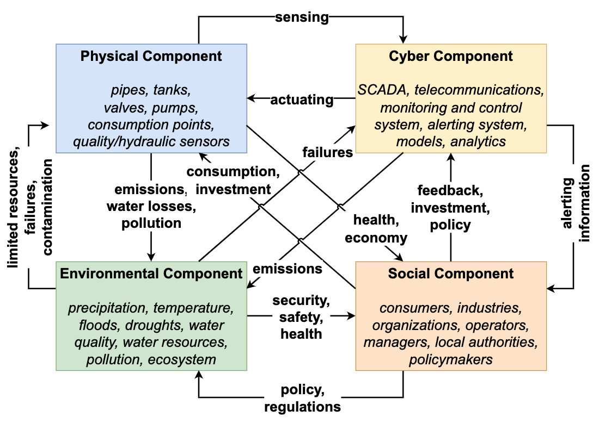
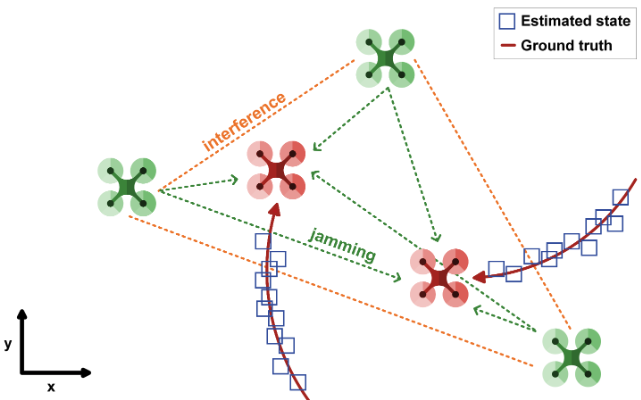

Research areas
Theory
My main research interests lie within the areas of learning from nonstationary, limited-labelled, and imbalanced data streams. I am also interested in reinforcement learning and multiagent coordination.
Applications
- Monitoring of critical infrastructures: Smart water systems
- Health informatics: Infectious disease modelling and forecasting
- Cyber security: Network intrusion detection and response, downing rogue drones
Below is a list of areas that I have worked or have been working in, along with a short description, representative publications and code.

Multivariate time-series anomaly detection and localisation

Multivariate time series (MTS) anomaly diagnosis, which encompasses both anomaly detection and localization, is critical for the safety and reliability of complex, large-scale real-world systems. The vast majority of existing anomaly diagnosis methods offer limited theoretical insights, especially for anomaly localization, which is a vital but largely unexplored area
Representative publications: ICLR 2026 [pdf], IEEE CIES, 2025. [pdf] (Outstanding Paper Award)

Learning from imbalanced data streams
Learning in nonstationary environments constitutes a major challenge, and this problem becomes orders of magnitude more complex in the presence of class imbalance. Learning from nonstationary and imbalanced data has been studied separately, but many key challenges remain open when the joint problem is considered.
Representative publications: IEEE TNNLS 2020 [pdf] [code], ICANN 2018 [pdf] [code] IEEE SSCI 2022 [pdf]
Active learning from data streams

Apart from data nonstationarity (concept drift) and class imbalance, acquiring ground truth information (e.g., labels in classification tasks) as instances arrive one-by-one can be costly or impossible in some real-time applications. An effective way to deal with limited labelled data is the active learning paradigm.
Representative publications: Neurocomputing 2022 [pdf] [code], Neurocomputing 2025 [pdf] [code], IEEE WCCI - IJCNN 2020 [pdf], IEEE SSCI 2022 [pdf] [code]
Unsupervised learning (anomaly detection) from data streams

Streaming data are now ubiquitous, yet often unlabeled, making infrequent event detection (e.g., anomalies) difficult. The problem is further compounded in nonstationary settings where concept drift degrades performance over time. To address these challenges, we propose autoencoder-based incremental learning and concept drift detection mechanisms.
Representative publications: IEEE WCCI - IJCNN 2024 [pdf], IEEE IJCNN 2023 [pdf], IEEE SSCI 2023 [pdf]
Machine learning for smart water systems

Check out our position paper! We have introduced a novel modelling framework for Smart Water Networks with an environmental and social focus. Furthermore, we have demonstrated its effectiveness in a real-world application. (IEEE TICPS 2024 [pdf])
We also look into different problems as follows.
Water contamination detection and localisation: IEEE CIETES 2025 [pdf], SysTol 2025 [pdf]
Domestic water consumption monitoring: JHI 2024 [pdf]
Urban water consumption forecasting: IEEE CIETES 2025 [pdf]
Machine learning for infectious disease modelling and forecasting

Modelling and forecasting the spread of infectious diseases is essential for assessing transmissibility, planning healthcare resources, and designing suitable and timely intervention strategies. Reliable short-term forecasts of infection growth can help governments and healthcare systems anticipate upcoming resurgences, prepare targeted responses, and minimise both health and economic impacts. Therefore, advancing accurate forecasting methods is critical for strengthening preparedness and response capacity in the face of current and future incidences.
Representative publications: IEEE EMBC 2024 [pdf], IEEE CIBCB 2025 [pdf], ICANN 2023 [pdf]
Multiagent reinforcement learning for intrusion detection and response

A serious threat in the current Internet is distributed denial of service (DDoS) attacks, which target the availability of the victim system. They are designed to exhaust a server's resources or congest a network's infrastructure, and therefore renders the victim incapable of providing services to its legitimate users. To address this, a distributed and coordinated defence mechanism is necessary, where many defensive nodes, across different locations cooperate in order to stop or reduce the flood. We propose the use of multiagent reinforcement learning to address the problem.
Representative publications: EAAI 2015 [pdf] (Department's Best Student Paper Award), AAAI 2013 [pdf], AAMAS 2016 [pdf] [code], Connection Science 2015 [pdf], EUMAS 2013 [pdf], PhD thesis [pdf]
Multiagent reinforcement learning for downing rogue drones

The wide adoption and use of unmanned aerial vehicles (UAVs) has created not only opportunities but also threats to the security of sensitive areas. Thus, effective and efficient counter-drone systems are required to protect these areas. This work addresses this issue by developing cooperative multi-agent searching, tracking and jamming techniques using RL to counter the operation of one or multiple rogue drones flying over a sensitive area.
Representative publications: IEEE TMC 2024 [pdf], IEEE SMC 2024 [pdf], ICUAS 2023 [pdf]